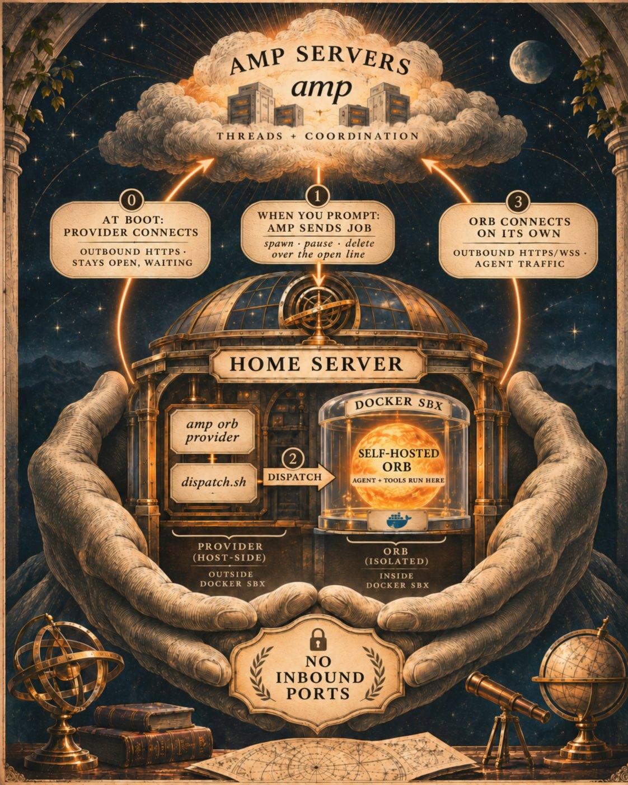

fuentesjr/sbx-orb-provider · dispatch.sh
sbx Orb Provider
Amp keeps your threads in the cloud, but the agent itself, with its shell, files and tests, runs in a machine called an orb. This provider puts those orbs on your own host, such as a home server: every Amp thread gets its own Docker Sandboxes microVM, with its own kernel, its own Docker and a network limited to an allowlist.
- Provider name <provider-name>
- Isolation sbx microVM per thread
- Job time 0.1–9 s of a 5-min budget
- Inbound from the internet none

The big picture
Amp's self-hosted orbs split the work in two. Amp keeps the thread and coordinates it. The agent process itself runs inside the orb, on our hardware. Our side also runs a small program, the provider, that Amp hands jobs to: start this orb, pause it, delete it. How a job becomes a machine is up to a script we write, the dispatch. Ours turns every job into Docker Sandboxes (sbx) commands.
What happens when you press Enter
Amp can't reach into the house, so the house keeps a line open to Amp in advance, like a phone call placed hours ago and never hung up. Amp can't call you, but it can talk on the line you opened.
- Long before: the host boots.The provider service starts, connects out to Amp, and stays connected, waiting for jobs. This happens once, and it's already done when you sit down to type.
- You press Enter.Amp picks the provider you chose and sends a
spawnjob down the line that's already open. No new connection is needed. - The dispatch builds the orb.
dispatch.shcreates the sbx microVM (about 2 seconds from a local template) and starts Amp's bootstrap inside it. - The orb dials out.The bootstrap opens its own outbound connection to Amp. The agent starts in the orb and works over that connection: Amp coordinates and stores the transcript, while the shell, files and tests run here.
That's why orbs stop working if the provider isn't running: without the open line, Amp has no way to deliver step 1.
agent user, the sbx daemon and its global network policy.What leaves the house: the whole thread transcript, meaning everything the agent reads, runs and prints (file contents, command output, diffs), which goes to Amp and its model providers and is stored with the thread. What stays: the checkout, build output, Docker images and the orbs' disks.
An orb's life
Amp sends only three kinds of job: spawn, pause and delete. Each one must be safe to repeat and finish within five minutes. The orb's ID, amp-<thread id>, doubles as the sandbox name, so a repeated job always finds the same machine.
| Amp asks | The dispatch does |
|---|---|
spawn, new orb | Picks the image, checks disk space, sbx create at the orb type's size, adds the orb's own network rules, then starts Amp's bootstrap and a keep-alive. |
spawn, existing orb | Skips creation; sbx exec starts the stopped sandbox, then the same bootstrap and keep-alive. |
pause | Stops the keep-alive, records two health facts from the running orb, sbx stop. With ORB_SNAPSHOT_ID: sbx template save. |
delete | Stops the keep-alive, sbx rm --force, removes the orb's state file. Its network rules go with it. |
What a spawn does
Spawn is the only job with real work in it. In order:
- Pick the image.A local snapshot for
ORB_SNAPSHOT_IDif one exists; elseORB_IMAGE, if it names a local snapshot template; otherwise the pinned template fromamp-orb.pin. For the base image the pin always wins, so an old image override left over from when the provider started can't bring back an old image. - Check the disk.It needs the Docker volume's size plus 10 GB of headroom. If space is short, a large orb gets a 10 GB volume instead and the dispatch starts the host's low-disk alert, without delaying the spawn.
- Create the microVM.
sbx create shell --template <image> --pull never --cpus N --memory M, with the Docker volume size set per orb. Creating from a local template takes about 2 seconds. - Open the orb's own network rules.Amp's three hosts over TCP, plus UDP to Amp's Desktop relays, for this sandbox only. If a rule fails, the half-made sandbox is removed so a retry starts clean.
- Recreate
/run.The orb has no systemd, sosystemd-tmpfiles --create --prefix=/runrebuilds what the image expects there, notably/run/lockfor Desktop. Runs on every spawn, new or resumed. - Start Amp's bootstrap, detached.
amp orb bootstrapruns as the image's user with the short-livedORB_TOKEN, undersetsid nohup, and with sbx's placeholderGH_TOKENremoved so Amp's own GitHub token is used. - Hold the orb awake.sbx stops a sandbox 30 seconds after its last session ends (observed on sbx v0.50.1). An idle
sbx exec <orb> sleep infinityper orb keeps it running until the next pause.
The keep-alives live inside the provider's service. Stopping the provider ends them, sbx stops the orbs within 30 seconds, and Amp resumes each one on its thread's next message. Orbs run only while the provider runs.
Inside an orb
An orb is a full Linux machine with its own kernel, not a container sharing the host's. What runs inside is Amp's own orb image, pinned by digest, with a thin patch layer on top.
Orb types
When starting a thread you can pick a size. The types are defined in the provider's Edit dialog in Amp; the dispatch decides what each one gets. Size is fixed when the orb is created, and an unset or unknown type gets large with a warning in the log.
large
- CPU
- 4
- Memory
- 8 GB
- Docker volume
- 20 GB
Most threads: the Rails suite with Postgres and Redis on the orb's own Docker.
small
- CPU
- 2
- Memory
- 4 GB
- Docker volume
- 10 GB
Light threads: docs, small scripts, no service containers.
Why set sizes at all: left alone, sbx gave each sandbox half the host's memory (observed on v0.50.1), so two orbs would take all 32 GB of the host. An idle large orb costs the host about 1–1.4 GB; a working one grows toward its 8 GB limit (one held around 4 GB).
What an orb can reach
Nothing leaves an orb except through sbx's proxy, which denies by default. Two sets of rules open specific doors.
Blocked hosts that don't break setup: index.rubygems.org and mise.jdx.dev (the tools fall back to rubygems.org and GitHub) and cache.ruby-lang.org (Ruby comes prebuilt). Chrome for Testing is also blocked, and that's an open gap: orbs can't run browser system tests yet. mise's mise.run installer fails here; install mise from its GitHub releases instead.
Testing a block: for HTTPS, the proxy answers the connection request with 200 even for a blocked host, then returns 403 Forbidden itself. Check the status code (curl -s -o /dev/null -w '%{http_code}' should print 403), not the first header line. The 403's text suggests running sbx policy approval ls; that's a host-side command, so an agent inside the orb can't use it. Traffic that ignores the proxy settings is still intercepted and checked, and DNS to outside resolvers is blocked.
Making Amp's image fit sbx
Amp's orb image assumes it boots with systemd as the first process. Under sbx the first process is sbx's own small init, so a few things the image expects never happen. Each fix below is small and lives in one place.
Docker-in-Docker labelpatch 1 · image
sbx creates the orb without Docker privileges, then every command fails because Docker can't start.
Add the label com.docker.sandboxes.start-docker=true.
Docker's cgroup driverpatch 2 · image
docker run in the orb fails: "systemd not running on this host".
Switch /etc/docker/daemon.json to the cgroupfs driver.
git for hardcoded pathspatch 3 · image
Tests that call /usr/bin/git get Debian's 2.39 and fail.
Point /usr/bin/git at Amp's git 2.55.
/run entriesdispatch · every spawn
Desktop dock clicks fail: /run/lock doesn't exist.
Run systemd-tmpfiles --create --prefix=/run before the bootstrap.
Staying awakedispatch · keep-alive
sbx stops the orb 30 seconds after the detached bootstrap starts.
One idle sbx exec … sleep infinity per running orb.
GitHub tokendispatch · bootstrap
sbx's placeholder GH_TOKEN wins, and gh reports "Bad credentials".
Start the bootstrap with GH_TOKEN and GITHUB_TOKEN removed.
Desktop videosbx setting + per-orb rule
Desktop connects but never streams; its traffic is UDP.
sbx's experimental, undocumented feature.udp-egress (Docker's docs say UDP can't be unblocked by policy) plus a per-orb UDP rule to Amp's relays.
The upstream-facing ones are written up as notes for Amp and Docker in docs/design-notes.md. If either fixes its side, the matching patch can go.
Snapshots
After a new orb finishes repository setup (clone, .agents/setup), Amp's first pause carries a snapshot ID. The dispatch saves the stopped disk as a local template, <host>/amp-orb-snapshot:<id> (<host> is the image namespace hardcoded in the scripts), and new threads in that project boot from it and skip setup. Amp keeps one snapshot per project and orb size, reuses it for up to 72 hours, then refreshes it.
The catch: within those 72 hours, new threads boot the image the snapshot was taken from, not the current pin, and a changed .agents/setup doesn't invalidate it either.
After an image update, removing the local copy is enough. Amp's record can stay: the next thread gets the same snapshot ID, finds no local template, boots the pinned one and saves a fresh snapshot under that ID.
# on the host
sudo -u agent sbx template ls
sudo -u agent sbx template rm --force docker.io/<host>/amp-orb-snapshot:<id>After a change to a repo's .agents/setup, delete Amp's record, as Amp documents, so the next thread reruns setup (then remove the orphaned local copy as above):
# wherever you use the Amp CLI
amp projects snapshots delete <owner/repo>Either way, the next thread boots the pinned template, reruns setup and saves a fresh snapshot. Existing orbs keep their image until their threads are deleted; removing a template never breaks an orb created from it.
Updates and rollback
Nothing updates itself. The host's Amp CLI has self-update turned off, and Amp's image is pinned by digest, because Amp's :latest tag moves several times an hour. Both change only through one command, which won't switch unless the candidate image passes the full dispatch dry run. That run uses a fake token, so it tests the image and the dispatch, not the CLI's protocol with Amp; the new CLI is only checked at start-up (and rolled back if it doesn't start within 30 seconds). The Amp CLI inside each orb isn't pinned at all: it updates itself to upstream at bootstrap.
The pin file records the whole stack in four lines:
digest=sha256:<digest> # Amp's orb image
patch=<n> # patch revision
template=docker.io/<host>/amp-orb:<digest>-p<n>
amp_cli=<version> # host CLI the provider runsAfter an update, commit the pin file (ORB_PIN_FILE) and its .previous copy wherever you keep them. The Amp CLI inside each orb isn't pinned; Amp's bootstrap updates it.
Keeping it healthy
- Daily canary (a systemd timer, 11:00–11:15 UTC). A dry run on a throwaway orb: spawn, repeat spawn, pause with snapshot, resume, spawn from snapshot, delete, with each type's size checked, then a check that no sandbox, rule or keep-alive is left behind. It has no alerting of its own: add
OnFailure=with a systemd drop-in. - Drift check, part of the canary. Fails if the pinned template is missing or gone upstream, the installed CLI isn't the pinned one, the provider is down or running a replaced binary, self-update isn't off, the UDP flag is off,
/usr/bin/gitin a current orb is older than 2.40, or an orb's agent has a secret whose name isn't on the host's allowlist. A newer upstream CLI or image is reported, not failed. - Status:
./install.sh statuslists the pinned stack, disk, drift, the sbx daemon and every orb with its state, type and size, so orphans are visible. - Live log:
journalctl -u amp-orb-provider -fshows each job as it runs, with what Amp sent (never the tokens).
Security model
- Launchers on the host, workloads in sandboxes. Untrusted code, the agent's tool calls, only ever runs inside an sbx microVM. The provider itself runs on the host because it has to drive sbx, but it never executes workload code.
- Outbound only. Nothing is reachable from the internet; the provider and orbs only dial out. Put the host on an isolated network segment that can only reach the internet, not the rest of your network, and if you manage it over SSH, accept that only from your own admin machine.
- The provider token is TPM-bound. It's a systemd credential encrypted with the host key plus the TPM, decrypted by systemd at start into the service's private credentials directory, which any process running as
agentcan read. The dispatch drops it before doing anything, so it never reaches an orb. - Secrets are watched by name. As defense in depth, the dispatch records the names, never the values, of the secrets present in each orb's agent environment, and the drift check alerts on any name outside an allowlist.
- Accepted trade-off: the orb provider and the runner launcher run as the same
agentuser, so each could read the other's decrypted credential. Accepted for a single-owner home server.
Commands
Start a thread on your provider
In the web app: New Thread → the Orb chip → Default › on the Orb row → under Self-Hosted, pick <provider-name> · small or <provider-name> · large. From the CLI:
amp -ox "<message>" --orb-provider <provider-name> [--orb-size small]Good to know, from Amp's docs
- One provider per token. Run exactly one
amp orb providerfor each provider token. - Orb types are permanent. A type's name can't be changed, and deleting a type stops threads that use it.
- When orbs pause: 5 minutes after the agent finishes, or 20 minutes after your last interaction, whichever is later.
- The CLI's project choice:
-oxpicks the project from the current directory's git remote, and otherwise starts without a repo; pass--projectto be explicit. Provider and size flags are ignored when continuing an existing thread. Making your provider the workspace's default removes the need for the flag.
Operate it (on the host, from this repo)
export ORB_PIN_FILE=/abs/path/amp-orb.pin
./install.sh status # everything at a glance
./install.sh canary-run # the daily canary, now
./install.sh update-orbs # re-pin, build, test, switch
./install.sh rollback-orbs # back to the previous pin
journalctl -u amp-orb-provider -fRestarting the provider pauses running orbs; they resume on the next message. Restarting sbx-daemon stops every sandbox, orbs and CI jobs alike.